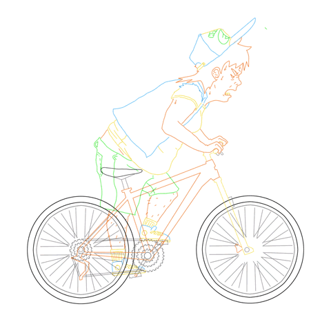
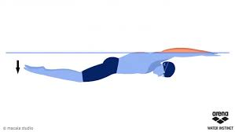
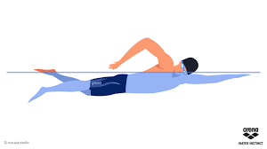
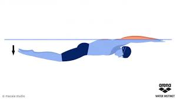
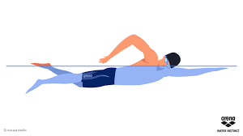

MAGI Prime Fitness is often compared to an elegant country club. Our 22,000 square foot two-level, full-service fitness facility is much more than a gym. We strive to serve the needs and interests of every member. We provide the area's premier credentialed fitness trainers, hot yoga studios and more than 40 group exercise studio classes complimentary to members, including beginning, intermediate and advanced health and fitness levels. Prime Fitness is a finished club where the architecture directly complements the vision of creating an elegant home-style environment that exceeds all expectations.
A stationary bicycle (also known as exercise bicycle, exercise bike, or exercycle) is a device with saddle, pedals, and some form of handlebars arranged as on a bicycle, but used as exercise equipment rather than transportation. An exercise bicycle is usually a special-purpose exercise machine resembling a bicycle without true wheels, but it is also possible to adapt an ordinary bicycle for stationary exercise by placing it on bicycle rollers or a trainer. Rollers and trainers are often used by racing cyclists to warm up before racing, or to train on their own machines indoors.
.png) 



Swimming is one of the greatest fitness activities for you. It improves the fitness of almost your entire body, works both your upper and lower body muscle groups, reduces stress and calms your mind. One of the best aspects of swimming is that it is almost totally impact free. Swimming is also an easy fitness activity to start if you are overweight, as the water supports your weight, it lets you improve your fitness and loose weight to allow you to add more impact strenuous fitness activities to your fitness routine. Swimming is also a great activity for the elderly, as the risk of injury is very low.
.gif)
.jpg)
.jpg)
.jpg)
.jpg)
A gym, short for gymnasium, is an open air or covered location for gymnastics, athletics, and gymnastic services. They are commonly found in athletic and fitness centers, and as activity and learning spaces in educational institutions. "Gym" is also slang for "fitness center", which is often an indoor facility. Gymnasia apparatus such as bar-bells, parallel bars, jumping board, running path, tennis-balls, cricket field, fencing area, and so forth are used as exercises. In safe weather, outdoor locations are the most conducive to health.


Weight training is a common type of strength training for developing the strength and size of skeletal muscles. It utilizes the force of gravity in the form of weighted bars, dumbbells or weight stacks in order to oppose the force generated by muscle through concentric or eccentric contraction. Weight training uses a variety of specialized equipment to target specific muscle groups and types of movement. Sports where strength training is central are bodybuilding, weightlifting, powerlifting, and strongman, highland games, shot put, discus throw, and javelin throw. Many other sports use strength training as part of their training regimen, notably; mixed martial arts, American football, wrestling, rugby football, track and field, rowing, lacrosse, basketball, baseball, and hockey. Strength training for other sports and physical activities is becoming increasingly popular. These gymnasia also had teachers of wisdom and philosophy. Community gymnastic events were done as part of the celebrations during various village festivals. In ancient Greece there was a phrase of contempt, "He can neither swim nor write." After a while, however, Olympic athletes began training in buildings just for them. Community sports never became as popular among ancient Romans as it had among the ancient Greeks. Gyms were used more as a preparation for military service or spectator sports. During the Roman Empire,

.jpg)
.jpg)

Massage for the body is a popular beauty treatment, with various techniques offering benefits to the skin (including the application of beauty products) and for increasing mental well-being
Beauty salons have proven to be a recession-proof industry in the United States. Although sales had declined from 2008 highs, they remain robust with long term positive forecast.
A barber (from the Latin barba, "beard") is a person whose occupation is mainly to cut, dress, groom, style and shave men's and boys' hair. A barber's place of work is known as a "barber shop" or a "barber's". Barber shops are also places of social interaction and public discourse.
A spa is a location where mineral-rich spring water (and sometimes seawater) is used to give medicinal baths. Spa towns or spa resorts (including hot springs resorts) typically offer various health treatments, which are also known as balneotherapy. The belief in the curative powers of mineral waters goes back to prehistoric times.


A complementary piece to the squat rack. A barbell is essential to strength training, it holds the freeweights, or sometimes the weights are attached to the ends.
Pro Tip: A barbell is perhaps the most versatile out of all the gym equipment out there. You can literally do hundreds of different exercises with these iron bars.

Used for upper body strength training exercises, where you are pushing weight upwards as you're laying on your back. You want the perfect chest? This is one of the tools you use to train for that chest.
Pro Tip: When doing a bench press, do not arch your back, this means that your feet are placed too low. Try not to bounce the bar off your chest either, even though you may think it makes you look super macho.

Essentially an elevated bench press, but the elevation affects the muscle being targeted.
Pro Tip: Common mistakes people tend to make when exercising with an incline bench press are: setting the bench at a high incline (over 50 degrees), arching their backs, bouncing the bar off their chest, and locking of elbows.

A favorite among athletes, this mechanic focuses on explosiveness.
Pro Tip: Do not put too much demand on your triceps when exercising with the hammer strength machine. Also avoid locking your elbows at the top of the lift, and try your best to maintain equal force in both arms as you're lifting.

Very diverse workout machine in the amount and types of exercises that can be performed by attaching grips to the end of the cables.
Pro Tip: When doing cable and pulley machine exercises, it is important to use the right amount of weight. Too little weight, and you will not be working out effectively, too much and you will put strain on your muscles, perhaps even lead to injury.

Pretty much the go-to gym equipment most people first think of when they think of bodybuilding. Varying in weight, but the same concept, a handle bar with weights on opposite ends. A must have free weight for any fitness regiment. There are even adjustable dumbbells with differing weights all in one piece.
Pro Tip:Dumbbells have a lot going for them, mainly, they are inexpensive when compared to other equipment. But if used right, they can offer just as much, if not more, than some of their more lucrative gym mates.

The best tool for upper body exercise and strengthening. You can pull yourself up with any grip, though palms facing froward is the most popular one seen in demonstrations. Different grips and hand positions can affect different muscles. You pull yourself up, until your chin is over the bar.
Pro Tip: Pullups are VERY demanding, especially for beginners. It is because of this that you must learn to master them. They are truly an excellent, and yes very demanding, upper body workout.

Used for strengthening your latissimus dorsi muscle, or lats as they are known. Pull downwards toward you, keeping your elbows and back straight. Google a picture of Bruce Lee and you'll see the lats you're capable of attaining with this machine.
Pro Tip: As counter intuitive as it may sound to some people, do not lower the bar to the belly; if you are doing this, it means you are not using enough weight.

Lifting the weights up with your quads, holding steady for a second or two once you fully extend at the top. Leg extension machines are the perfect gym equipment to use when you are rehabilitating from an injury or just trying to strength train your quads.
Pro Tip: Avoid twisting hips and knees as you move the weight, especially when lowering the weight to the machines limit. Avoid fast movements just to gain momentum, remember that form is superior to everything else in bodybuilding.

Opening and closing your legs, pushing the weight resistance outwards. A most popular gym machine among ladies, perfect for toning legs and butt.
Pro Tip: This is a very specific exercise for the leg adductors, the long adductor in particular. This workout machine works well for both beginners and advanced athletes.

This type of gym equipment was designed to isolate and work the chest. A favorite for beginner bodybuilders as it has a unique motion that feels good when performing.
Pro Tip:To properly use the peck deck machine, sit back with your elbows at about 90 degrees, on the mid-chest level. Push to bring the arms together in front of your face,
Fitness Advantage will help you get a head start on a healthier lifestyle. It provides access to a network of high quality health and fitness clubs at affordable rates.
Lowest membership rate for the type of membership selected. A one week trial membership, free of charge. This lets members try clubs for one week each to experience the club and its facilities. Not to be combined at the same club. Fitness Advantage is available nationwide with over 9,500 participating health clubs worldwide. Some of the largest club chains in the country are members of the network including Bally Total Fitness, Anytime Fitness, Snap Fitness and LA Fitness. Discounts on fitness equipment from Sears and 2nd Wind Fitness.
Address: SHREDS® 21-C, Lane 2, Khayaban e Ittehad, Ittehad Commercial, Phase 6, DHA Karachi
Address: Al Fahd Plaza, Behind Kohinoor One Plaza, Kohinoor City, Jaranwala Road, Faisalabad
39-A, Gulberg V, off zafar Ali Road, Lahore-Pakistan
Fitness Center Mon - Friday: 6:30 AM–11 PM Sat: 8 AM–8 PM Sun: 8 AM–11 PM Aquatic Center Mon, Wed. & Fri: 6:30 AM–8:30 AM
MAGI Prime Fitness is often compared to an elegant country club.
ADDRESS : Karachi Pakistan
EMAIL : MAGIFitnessClub@gmail.com
PHONE : 021-31234567